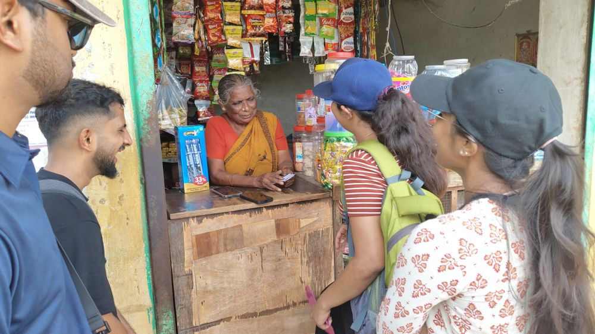

Portfolio
I find what’s worth fixing in how a business runs.
A problem-solver who turns analysis into recommendations that create value, using structured thinking, process improvement, and cross-functional collaboration to deliver measurable impact.
Three years in power-sector operations, now a PGPM candidate at Great Lakes Institute of Management, Chennai · graduating 2027.

Where it added up
The story so far
-
2017–2023 · Pune
An engineer’s grounding
Mechanical engineering at Vishwakarma Institute of Technology, graduating at 9.37/10. Along the way I earned a granted Indian design patent for an automated agricultural sprayer, and captained the department kabaddi team — a first lesson in leading from the front.
-
2022 · Pune
Learning to see waste
A production-floor internship at GE Aerospace, where Lean Six Sigma and value-stream mapping stopped being textbook terms. In four months I helped cut work-in-progress inventory by 55% and lift throughput by 30%.
-
2023–2025 · Udupi
Making the business case
Assistant Manager on a 1,200 MW thermal plant. Three initiatives, one pattern — read the operating data, build the case, win management approval, and measure the result.
- Built the case for a single-unit cooling strategy and secured approval, improving efficiency and reducing fuel consumption — ~₹40 lakh in annual fuel savings.
- Built an equipment-wise auxiliary power dashboard that enabled multiple critical catches through continuous monitoring — ~₹25 lakh in annual savings.
- Implemented a 12-mill auxiliary-power optimization, cutting station auxiliary power by 0.015% — ~₹38 lakh a year (~350 MT coal).
-
2026 · Ahmedabad
The wider view
Moved to headquarters to monitor asset performance across a PAN-India thermal portfolio — identifying and escalating anomalies for timely intervention (₹1.1 crore in risk savings), and automating routine MIS to free ~290 analyst-hours a year for higher-value analysis.
-
2026–2027 · Chennai
Sharpening the lens
A one-year PGPM at Great Lakes Institute of Management — turning an operator’s instinct into a manager’s toolkit. As Project Lead for Karma Yoga, I took a five-person team, the Noble Nayakas, to Natham Kariyacheri, a farming village in Tamil Nadu, to study climate resilience and build a business plan around soil health, drip irrigation, and solar power. The same instinct shows up in the classroom and on the court.

The Noble Nayakas on our Karma Yoga field study — Natham Kariyacheri, Tamil Nadu. 
Interviewing a village shopkeeper — primary research for the business plan. 
Making a point during a case discussion at Great Lakes. 
Hyrox, Great Lakes Chennai — 1st Runner-up. Building now
- Empirical Research Project — channel economics and product-mix profitability at Herbs n Hopes, turning order-level sales data and consumer research into a marketplace-to-D2C growth roadmap.
- Live Voice-to-Text Translator — a real-time Tamil-to-English speech app that streams speech recognition into LLM-based translation.
- Asset Performance Monitoring System — a web app running scikit-learn anomaly detection on thermal-plant operating data, with a consultant-style diagnosis-and-recommendations layer.
Credentials
Education
| PGPM | Great Lakes Institute of Management, Chennai | 3.71/4 | 2027 |
|---|---|---|---|
| B.Tech, Mechanical | Vishwakarma Institute of Technology, Pune | 9.37/10 | 2023 |
| Class XII | Maharashtra State Board | 77.54% | 2019 |
| Class X | Maharashtra State Board | 91.80% | 2017 |
Certifications
- Lean Six Sigma Green Belt · KPMG · 2026 Certificate ↗
- Data Analyst Certificate · IBM · 2025 Certificate ↗
Awards
- Indian Design Patent 358739-001, automated agricultural sprayer, 2023 Certificate ↗
- MHT-CET 99.46 percentile; B.Tech CGPA 9.37/10
- 1st Runner-up, Hyrox, Great Lakes Chennai, 2026
Positions of Responsibility
- Project Lead, Karma Yoga · Great Lakes Chennai · 2026
- Consulting Club core member · Great Lakes Chennai · 2026
- Captain & Lead Raider, Mechanical kabaddi team · VIT Pune · 2022
Skills & Languages
Problem-solving · Business case development · Data analytics & visualization · Process optimization · Stakeholder management.
Interests: geopolitics, macroeconomics, reading. Languages: English, Hindi, Marathi.
Get in touch
Open to full-time roles across consulting, strategy, operations, and general management. If that sounds like who you’re hiring, I’d be glad to talk.